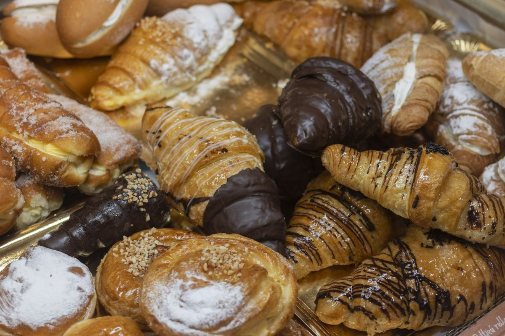
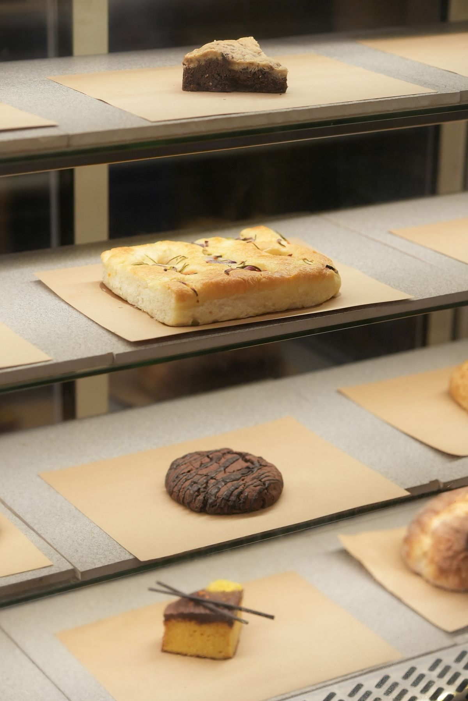
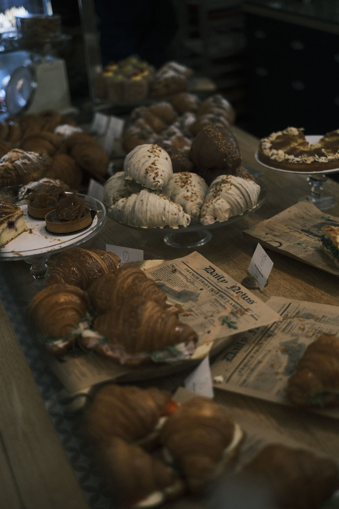

Cartozzo's Bakery
A third-generation bakery in Kenner, with wholesale breads and king cakes year-round.

About
Cartozzo's Bakery is a third-generation bakery on 23rd Street in Kenner. The bakery makes wholesale breads and rolls, king cakes year-round, crawfish bread and pies, and ships nationwide.
Breads, king cakes, and more
Wholesale breads and rolls
French and Italian breads, po-boys, pistolettes, focaccia, dinner rolls, muffulettas, and hamburger buns.
King cakes year-round
Cream-cheese, praline, red velvet, crawfish, and muffuletta varieties.
Crawfish bread and pies
Nationwide shipping
Third-generation baking in Kenner
Cartozzo's Bakery is a third-generation bakery at 111 23rd St in Kenner. The bakery ships nationwide. Call (504) 469-9615 or email cartozzobakery@gmail.com to ask about wholesale breads or a king cake.
Gallery


All gallery photos are stock photos, labeled as such. They show breads and pastries, not this bakery's breads or cakes.
Visit
Address: 111 23rd St, Kenner, LA 70062
Hours: Monday to Friday 8:00 AM to 5:00 PM.
Phone: (504) 469-9615
Email: cartozzobakery@gmail.com
Contact
Call (504) 469-9615 Email cartozzobakery@gmail.com
Cartozzo's Bakery serves Kenner, LA. Questions? Call (504) 469-9615.